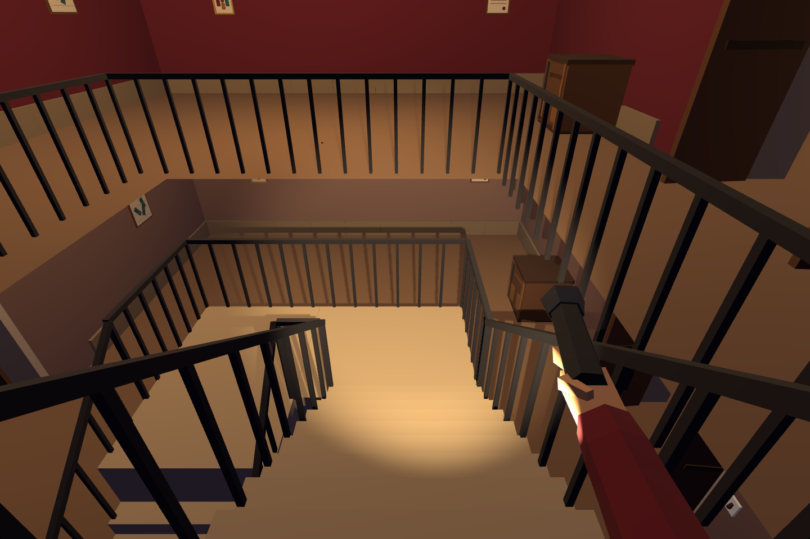
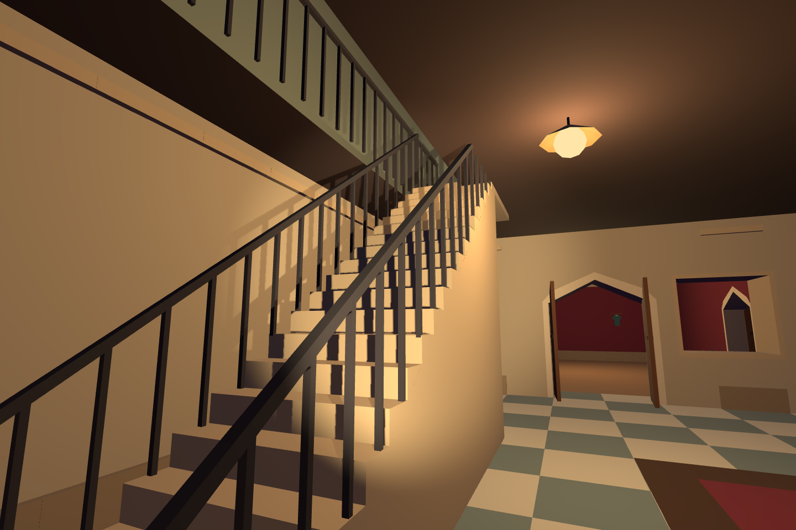
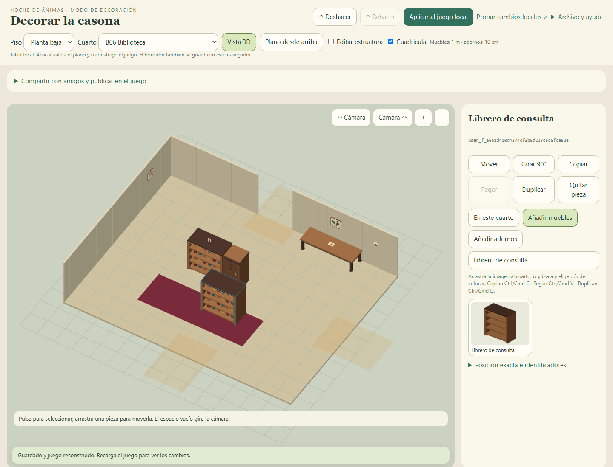
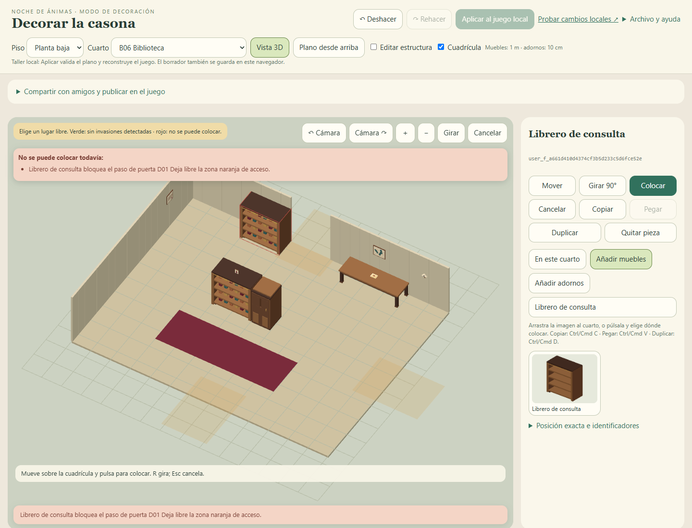

Editor y escaleras · V21
Copiar, pegar y duplicar muebles, adornos y posibles escondites. Arrastrar desde el catálogo. Avisos flotantes. Barandales unidos y colisión acorde al paso real.

Barandales con barrotes unidos a los peldaños y al pasamanos
Escalera de cocina: acceso y paso útil
Muebles del catálogo, con sus propias copias
Los avisos flotan sin desplazar la vista o el inspectorVerificado: 16 recorridos con distintas cargas, partidas simuladas con las 22 ánimas sin atascos en escaleras y controles del editor en perfiles iPhone 12 emulados. La prueba de salas usa transporte simulado; no es una medición en un celular físico.